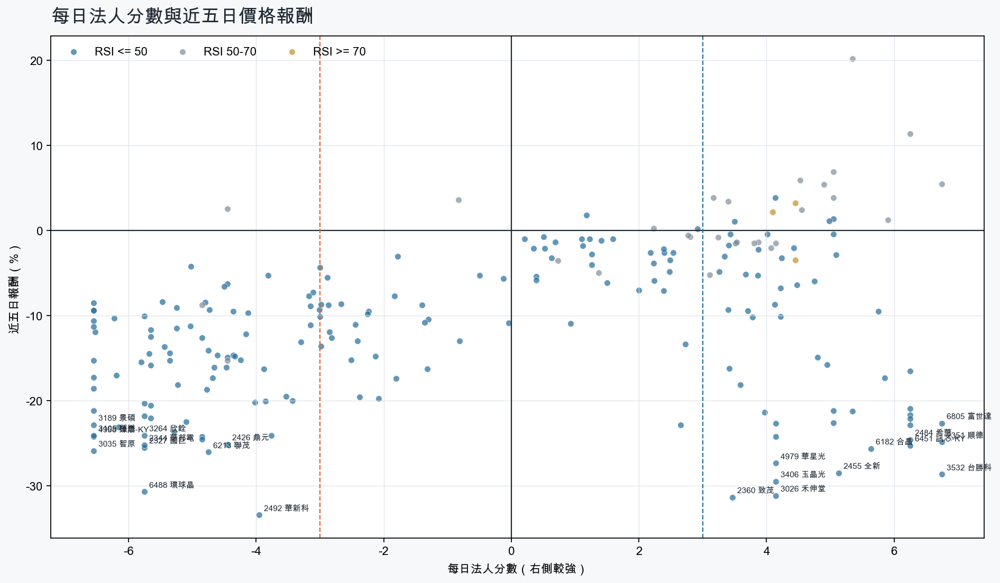
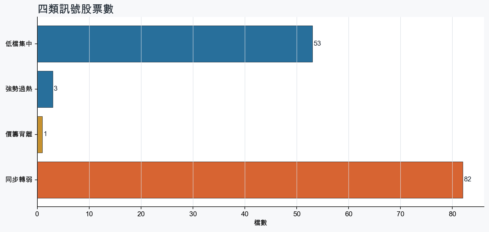
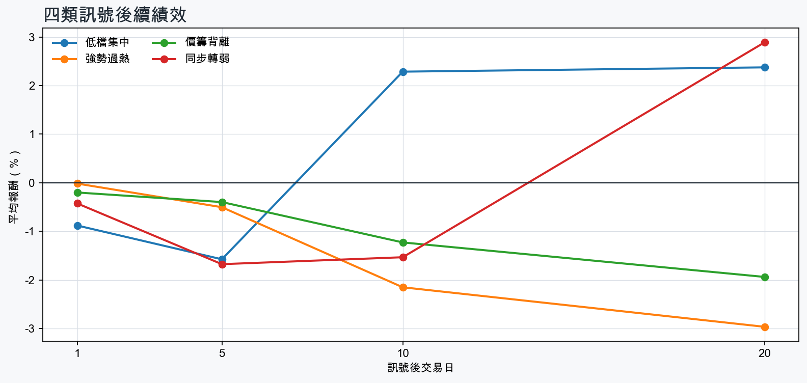

市場情緒偏空
近5日法人合計-12,459,404 張
篩選池上漲比例10.0%
籌碼好 / RSI低15 檔
籌碼差 / 價跌15 檔



EPS × PE VALUATION
法人常用的相對估值
顯示保守、基準與樂觀估值帶，不把單一數字包裝成精準目標價。
最新累計 EPS 依季數年化 × 同產業有效 P/E 的 Q25／中位數／Q75。排除本公司、非正 P/E，並以 1.5×IQR 排除離群值。估值帶是公開資料篩選值，不是法人目標價；未使用分析師預估 EPS。
MOOD × MONEY
情緒與籌碼雷達
熱度代表被討論程度；情緒分與法人方向分開計算。熱門不等於適合追價，樣本不足也不硬判多空。
| 股票 | 情緒 | 討論熱度 | 情緒 × 籌碼 | 情緒 × 基本面 |
|---|---|---|---|---|
| 6488 環球晶同步轉弱 | 中性分歧 -10.8信心 100 | 1003 篇 / 342 留言 / 3 則新聞 | 高熱分歧法人分 -5.8 | 基本面與情緒分歧基本面分 -1.1 |
| 1102 亞泥低檔集中 | 情緒低迷 -50.5信心 100 | 885 篇 / 137 留言 / 3 則新聞 | 法人布局、市場悲觀法人分 +3.5 | 基本面與情緒分歧基本面分 +0.1 |
| 2408 南亞科同步轉弱 | 情緒低迷 -64.6信心 100 | 871 篇 / 155 留言 / 3 則新聞 | 情籌雙弱法人分 -4.8 | 基本面佳、情緒悲觀基本面分 +3.6 |
| 2344 華邦電同步轉弱 | 偏空 -26.0信心 100 | 821 篇 / 113 留言 / 3 則新聞 | 情籌雙弱法人分 -5.8 | 基本面佳、情緒悲觀基本面分 +3.6 |
| 2412 中華電強勢過熱 | 情緒高漲 +52.5信心 86 | 821 篇 / 108 留言 / 3 則新聞 | 情籌共振法人分 +4.1 | 基本面與情緒共振基本面分 +2.0 |
| 2308 台達電同步轉弱 | 偏空 -34.3信心 82 | 741 篇 / 61 留言 / 3 則新聞 | 情籌雙弱法人分 -5.3 | 基本面佳、情緒悲觀基本面分 +3.6 |
| 3006 晶豪科同步轉弱 | 中性分歧 -12.2信心 58 | 661 篇 / 41 留言 / 1 則新聞 | 高熱分歧法人分 -4.8 | 基本面與情緒分歧基本面分 +3.6 |
| 1802 台玻低檔集中 | 偏多 +34.9信心 68 | 641 篇 / 29 留言 / 3 則新聞 | 情籌共振法人分 +3.3 | 基本面與情緒共振基本面分 +2.0 |
| 2492 華新科同步轉弱 | 偏空 -29.6信心 30 | 531 篇 / 16 留言 / 0 則新聞 | 情籌雙弱法人分 -4.0 | 基本面佳、情緒悲觀基本面分 +2.0 |
| 2327 國巨*同步轉弱 | 偏多 +29.7信心 30 | 390 篇 / 0 留言 / 3 則新聞 | 熱門但法人撤退法人分 -5.8 | 基本面與情緒共振基本面分 +2.0 |
| 6213 聯茂同步轉弱 | 偏空 -29.7信心 30 | 390 篇 / 0 留言 / 3 則新聞 | 情籌雙弱法人分 -4.8 | 基本面佳、情緒悲觀基本面分 +2.0 |
| 3037 欣興同步轉弱 | 偏空 -29.7信心 30 | 390 篇 / 0 留言 / 3 則新聞 | 情籌雙弱法人分 -6.2 | 基本面佳、情緒悲觀基本面分 +3.6 |
01
籌碼好 / RSI低
優先研究基本面；法人續買且價格止穩時，才適合分批觀察。
| 股票 / 確認狀態 | 每日法人分 | 浦男式近似 | 法人加速度 | RSI / 相對強弱 | 量價確認 | 融資融券 | 每週集保確認 | 基本面 | EPS × 同業 P/E 估值 | 情緒 / 情籌 | 近期消息 | 論壇討論 |
|---|---|---|---|---|---|---|---|---|---|---|---|---|
| 9904 寶成可研究 · 100 分籌碼與價格確認，可列研究清單 | +5.0法人 +31,249 張 / 4 天 | 命中 · 92站上月線；中期均線偏多；法人籌碼偏多；留意基本面中性 | +2,354 張近3日 +20,722 / 連續 +1 日 | 46.5相對大盤 +22.1% | 量比 1.13確認分 +5.5價格、量能與籌碼未見明顯弱項 | -%融資 - 張 / 融券 - 張 | +1.68 pp1000張 +1.65 pp | 單月營收年增 +10.4%累計營收年增 -0.5%來源：公開資訊觀測站 | 不適用最新財報缺少可年化 EPS | 中性分歧 +0.0熱度 33 / 信心 20情籌混合 | 【11:50 即時新聞】寶成(9904)盤中走強，法人與主力近期買盤成盤中焦點CMoney投資網誌 · 11/05外資20日狂掃8.7萬張寶成！油價崩、關稅風險降、LA28接棒 鞋業提前跑奧運行情？台灣好新聞 · 11/05 | 近期沒有明確提及本股的論壇樣本 |
| 3005 神基可研究 · 98 分籌碼與價格確認，可列研究清單 | +5.1法人 +3,655 張 / 5 天 | 接近 · 90中期均線偏多；法人籌碼偏多；法人買盤加速；留意未站月線 | +773 張近3日 +2,458 / 連續 +10 日 | 46.2相對大盤 +17.2% | 量比 0.91確認分 +4.0收盤跌破20日線 | -%融資 - 張 / 融券 - 張 | +1.41 pp1000張 +1.00 pp | 單月營收年增 +16.3%；累計營收年增 +10.7%仍需觀察下一期財報延續性來源：公開資訊觀測站 | 不適用最新財報缺少可年化 EPS | 樣本不足 +0.0熱度 0 / 信心 0情緒樣本不足 | 近期沒有通過股票語境篩選的新聞 | 近期沒有明確提及本股的論壇樣本 |
| 6179 亞通可研究 · 86 分籌碼與價格確認，可列研究清單 | +3.7法人 +1,479 張 / 3 天 | 接近 · 86中期均線偏多；法人籌碼偏多；法人買盤加速；留意未站月線、動能位置非最佳 | +4,281 張近3日 +1,521 / 連續 +1 日 | 38.8相對大盤 +6.1% | 量比 1.09確認分 +2.5收盤跌破20日線 | +1.2%融資 +278 張 / 融券 -151 張 | +1.63 pp1000張 +2.30 pp | 單月營收年增 +139.5%；累計營收年增 +132.5%仍需觀察下一期財報延續性來源：公開資訊觀測站 | 不適用最新財報缺少可年化 EPS | 樣本不足 +0.0熱度 0 / 信心 0情緒樣本不足 | 近期沒有通過股票語境篩選的新聞 | 近期沒有明確提及本股的論壇樣本 |
| 4904 遠傳可研究 · 93 分籌碼與價格確認，可列研究清單 | +4.0法人 +11,376 張 / 5 天 | 命中 · 96站上月線；中期均線偏多；法人籌碼偏多 | +85 張近3日 +6,504 / 連續 +10 日 | 48.3相對大盤 +24.0% | 量比 1.14確認分 +4.5價格、量能與籌碼未見明顯弱項 | -%融資 - 張 / 融券 - 張 | +0.26 pp1000張 +0.33 pp | 單月營收年增 +8.7%；累計營收年增 +11.0%仍需觀察下一期財報延續性來源：公開資訊觀測站 | 不適用最新財報缺少可年化 EPS | 偏多 +29.7熱度 39 / 信心 30情籌共振 | 〈遠傳法說〉多重成長引擎帶動 Q3營收、EBITDA創歷年同期高鉅亨網 · 11/054904 遠傳- 〈遠傳法說〉多重成長引擎帶動Q3營收、EBITDA創歷年同期高- 股市爆料同學會CMoney · 11/05 | 近期沒有明確提及本股的論壇樣本 |
| 2034 允強等待確認 · 88 分籌碼有訊號，但價格尚未確認 | +4.5法人 +2,285 張 / 5 天 | 接近 · 72中期均線偏多；法人籌碼偏多；法人買盤加速；留意未站月線、量能異常 | +661 張近3日 +1,519 / 連續 +6 日 | 35.4相對大盤 +8.2% | 量比 0.57確認分 +2.7收盤跌破20日線；成交量不足 | -%融資 - 張 / 融券 - 張 | +1.41 pp1000張 +1.07 pp | 單月營收年增 +47.4%；累計營收年增 +4.7%仍需觀察下一期財報延續性來源：公開資訊觀測站 | 不適用最新財報缺少可年化 EPS | 樣本不足 +0.0熱度 0 / 信心 0情緒樣本不足 | 近期沒有通過股票語境篩選的新聞 | 近期沒有明確提及本股的論壇樣本 |
| 2609 陽明等待確認 · 76 分籌碼有訊號，但價格尚未確認 | +4.2法人 +27,851 張 / 4 天 | 接近 · 74中期均線偏多；法人籌碼偏多；買超具延續性；留意未站月線、法人買盤未加速 | -18,554 張近3日 +5,041 / 連續 -1 日 | 37.0相對大盤 +17.7% | 量比 0.69確認分 -0.2收盤跌破20日線；法人買盤減速 | -%融資 - 張 / 融券 - 張 | +2.94 pp1000張 +3.04 pp | 單月營收年增 +69.9%；累計營收年增 +17.8%仍需觀察下一期財報延續性來源：公開資訊觀測站 | 不適用最新財報缺少可年化 EPS | 樣本不足 +0.0熱度 0 / 信心 0情緒樣本不足 | 近期沒有通過股票語境篩選的新聞 | 近期沒有明確提及本股的論壇樣本 |
| 2607 榮運可研究 · 87 分籌碼與價格確認，可列研究清單 | +3.5法人 +1,661 張 / 5 天 | 命中 · 88站上月線；中期均線偏多；法人籌碼偏多；留意法人買盤未加速、量能尚未確認 | -80 張近3日 +915 / 連續 +7 日 | 48.6相對大盤 +24.4% | 量比 0.73確認分 +3.6法人買盤減速 | -%融資 - 張 / 融券 - 張 | -0.04 pp1000張 -0.06 pp | 單月營收年增 +64.7%；累計營收年增 +18.1%仍需觀察下一期財報延續性來源：公開資訊觀測站 | 不適用最新財報缺少可年化 EPS | 樣本不足 +0.0熱度 0 / 信心 0情緒樣本不足 | 近期沒有通過股票語境篩選的新聞 | 近期沒有明確提及本股的論壇樣本 |
| 2615 萬海可研究 · 84 分籌碼與價格確認，可列研究清單 | +3.4法人 +10,969 張 / 4 天 | 接近 · 86中期均線偏多；法人籌碼偏多；法人買盤加速；留意未站月線、動能位置非最佳 | +7,529 張近3日 +8,013 / 連續 -1 日 | 40.9相對大盤 +17.7% | 量比 0.95確認分 +3.0收盤跌破20日線 | -%融資 - 張 / 融券 - 張 | +0.29 pp1000張 -0.15 pp | 單月營收年增 +97.6%；累計營收年增 +27.3%仍需觀察下一期財報延續性來源：公開資訊觀測站 | 不適用最新財報缺少可年化 EPS | 樣本不足 +0.0熱度 0 / 信心 0情緒樣本不足 | 近期沒有通過股票語境篩選的新聞 | 近期沒有明確提及本股的論壇樣本 |
| 3406 玉晶光等待確認 · 78 分籌碼有訊號，但價格尚未確認 | +4.2法人 +1,892 張 / 3 天 | 接近 · 65中期均線偏多；法人籌碼偏多；法人買盤加速；留意未站月線、相對強度普通 | +905 張近3日 +1,647 / 連續 +1 日 | 34.3相對大盤 -2.7% | 量比 1.06確認分 +0.3收盤跌破20日線 | -%融資 - 張 / 融券 - 張 | +1.87 pp1000張 +6.27 pp | 單月營收年增 +0.5%；累計營收年增 +10.1%仍需觀察下一期財報延續性來源：公開資訊觀測站 | 不適用最新財報缺少可年化 EPS | 偏多 +29.7熱度 39 / 信心 30情籌共振 | 三大法人買賣超 – 外資買超(3081)聯亞、(3406)玉晶光，投信買超(2330)台積電、(2454)聯發科，法人合計賣超1234.57億元永豐金證券 · 11/05熱門股／亞光Q3獲利創同期高 逆勢衝漲停！大立光卻摔破5千元、玉晶光跌逾8%非凡新聞台 · 11/05 | 近期沒有明確提及本股的論壇樣本 |
| 1102 亞泥可研究 · 88 分籌碼與價格確認，可列研究清單 | +3.5法人 +13,953 張 / 5 天 | 接近 · 78中期均線偏多；法人籌碼偏多；法人買盤加速；留意未站月線、基本面中性 | +5,088 張近3日 +9,925 / 連續 +6 日 | 43.2相對大盤 +21.4% | 量比 1.22確認分 +4.3收盤跌破20日線 | -%融資 - 張 / 融券 - 張 | +0.91 pp1000張 +0.98 pp | 單月營收年增 +5.2%累計營收年增 -5.1%來源：公開資訊觀測站 | 不適用最新財報缺少可年化 EPS | 情緒低迷 -50.5熱度 88 / 信心 100法人布局、市場悲觀 | 【13:30 即時新聞】亞泥(1102) 小幅走揚，市場聚焦營收回升與中期布局CMoney投資網誌 · 11/05《投信賣超3-2》聯鈞(327)、亞泥(305)、南電(264)富聯網 · 11/05 | [情報] 1102 上市外資買賣超排行PTT Stock · 11-02 · 84 留言[情報] 1102 上市投信買賣超排行PTT Stock · 11-02 · 36 留言 |
| 2851 中再保可研究 · 89 分籌碼與價格確認，可列研究清單 | +3.4法人 +2,957 張 / 5 天 | 接近 · 72中期均線偏多；法人籌碼偏多；法人買盤加速；留意未站月線、基本面中性 | +1,416 張近3日 +2,223 / 連續 +6 日 | 30.8相對大盤 +21.7% | 量比 1.60確認分 +4.5收盤跌破20日線 | -%融資 - 張 / 融券 - 張 | +1.13 pp1000張 +0.81 pp | 累計營收年增 +61.6%單月營收年增 -14.9%來源：公開資訊觀測站 | 不適用最新財報缺少可年化 EPS | 中性分歧 +0.0熱度 33 / 信心 20情籌混合 | 【12:13 即時新聞】中再保(2851) 盤中溫和走強，聚焦法人與主力續買動能CMoney投資網誌 · 11/05【13:00 即時新聞】中再保(2851)盤中微跌守高檔，法人買盤成焦點CMoney投資網誌 · 11/03 | 近期沒有明確提及本股的論壇樣本 |
| 6415 矽力*-KY可研究 · 82 分籌碼與價格確認，可列研究清單 | +4.0法人 +2,066 張 / 4 天 | 接近 · 81中期均線偏多；法人籌碼偏多；法人買盤加速；留意未站月線、量能尚未確認 | +2,451 張近3日 +2,054 / 連續 +3 日 | 39.5相對大盤 +8.0% | 量比 0.76確認分 +2.2收盤跌破20日線 | -%融資 - 張 / 融券 - 張 | +0.06 pp1000張 -0.91 pp | 單月營收年增 +50.7%；累計營收年增 +35.2%仍需觀察下一期財報延續性來源：公開資訊觀測站 | 不適用最新財報缺少可年化 EPS | 樣本不足 +0.0熱度 0 / 信心 0情緒樣本不足 | 近期沒有通過股票語境篩選的新聞 | 近期沒有明確提及本股的論壇樣本 |
| 5876 上海商銀可研究 · 82 分籌碼與價格確認，可列研究清單 | +3.7法人 +11,274 張 / 5 天 | 接近 · 82中期均線偏多；法人籌碼偏多；法人買盤加速；留意未站月線、動能位置非最佳 | +57 張近3日 +6,513 / 連續 +10 日 | 39.8相對大盤 +22.3% | 量比 0.92確認分 +2.5收盤跌破20日線 | -%融資 - 張 / 融券 - 張 | +0.36 pp1000張 +0.42 pp | 單月營收年增 +10.7%；累計營收年增 +2.8%仍需觀察下一期財報延續性來源：公開資訊觀測站 | 不適用最新財報缺少可年化 EPS | 樣本不足 +0.0熱度 0 / 信心 0情緒樣本不足 | 近期沒有通過股票語境篩選的新聞 | 近期沒有明確提及本股的論壇樣本 |
| 3293 鈊象等待確認 · 76 分籌碼有訊號，但價格尚未確認 | +4.8法人 +1,409 張 / 5 天 | 接近 · 68中期均線偏多；法人籌碼偏多；買超具延續性；留意未站月線、法人買盤未加速 | -909 張近3日 +654 / 連續 +6 日 | 29.9相對大盤 +13.8% | 量比 0.82確認分 -0.2收盤跌破20日線；法人買盤減速 | -1.4%融資 -26 張 / 融券 -3 張 | +1.63 pp1000張 +1.18 pp | 單月營收年增 +25.3%；累計營收年增 +18.9%仍需觀察下一期財報延續性來源：公開資訊觀測站 | 不適用最新財報缺少可年化 EPS | 中性分歧 +0.0熱度 39 / 信心 30情籌混合 | 3293 鈊象- 美國市場，董事長李柯柱表示，目前看不到市場的天花板。 - 股市爆料同學會CMoney · 11/02營收：鈊象(3293)10月營收22億2776萬元，月增率-0.96%，年增率18.73%富聯網 · 11/05 | 近期沒有明確提及本股的論壇樣本 |
| 1802 台玻可研究 · 80 分籌碼與價格確認，可列研究清單 | +3.3法人 +17,385 張 / 3 天 | 接近 · 81中期均線偏多；法人籌碼偏多；法人買盤加速；留意未站月線、量能尚未確認 | +14,089 張近3日 +7,747 / 連續 -2 日 | 45.0相對大盤 +16.9% | 量比 0.80確認分 +2.2收盤跌破20日線 | -%融資 - 張 / 融券 - 張 | +0.74 pp1000張 +0.63 pp | 單月營收年增 +34.1%；累計營收年增 +18.7%仍需觀察下一期財報延續性來源：公開資訊觀測站 | 不適用最新財報缺少可年化 EPS | 偏多 +34.9熱度 64 / 信心 68情籌共振 | 高階玻纖布需求缺口擴大 台玻林伯豐：第四期擴產計畫全面啟動經濟日報 · 11/05外資狂砍台股1024億！台玻昨加碼今殺最兇 進出前10一次看ETtoday財經雲 · 11/05 | [新聞] 高階玻纖布出貨強勁+產品組合優化 台玻PTT Stock · 11-03 · 29 留言 |
02
籌碼好 / RSI高
趨勢強但不追價，等待量縮、RSI降溫或回測支撐。
| 股票 / 確認狀態 | 每日法人分 | 浦男式近似 | 法人加速度 | RSI / 相對強弱 | 量價確認 | 融資融券 | 每週集保確認 | 基本面 | EPS × 同業 P/E 估值 | 情緒 / 情籌 | 近期消息 | 論壇討論 |
|---|---|---|---|---|---|---|---|---|---|---|---|---|
| 4526 東台等待拉回 · 87 分等拉回，不追價 | +4.5法人 +4,955 張 / 3 天 | 接近 · 73站上月線；中期均線偏多；法人籌碼偏多；留意法人買盤未加速、量能異常 | -1,777 張近3日 +2,119 / 連續 -2 日 | 78.8相對大盤 +77.8% | 量比 0.48確認分 +1.1成交量不足；法人買盤減速 | -%融資 - 張 / 融券 - 張 | +9.72 pp1000張 +9.61 pp | 單月營收年增 +81.0%；累計營收年增 +11.0%仍需觀察下一期財報延續性來源：公開資訊觀測站 | 不適用最新財報缺少可年化 EPS | 樣本不足 +0.0熱度 0 / 信心 0情緒樣本不足 | 近期沒有通過股票語境篩選的新聞 | 近期沒有明確提及本股的論壇樣本 |
| 3691 碩禾等待拉回 · 88 分等拉回，不追價 | +4.5法人 +1,388 張 / 3 天 | 命中 · 89站上月線；中期均線偏多；法人籌碼偏多；留意法人買盤未加速、動能位置非最佳 | -1,459 張近3日 -51 / 連續 -2 日 | 71.3相對大盤 +49.4% | 量比 1.97確認分 +1.9法人買盤減速；融資單日增幅偏高 | +6.6%融資 +380 張 / 融券 -226 張 | +2.03 pp1000張 +4.17 pp | 單月營收年增 +64.2%；累計營收年增 +112.3%仍需觀察下一期財報延續性來源：公開資訊觀測站 | 不適用最新財報缺少可年化 EPS | 樣本不足 +0.0熱度 23 / 信心 10情緒樣本不足 | 【10:24 即時新聞】碩禾(3691)盤中走強，主力買盤延續推升股價CMoney投資網誌 · 11/05 | 近期沒有明確提及本股的論壇樣本 |
| 2412 中華電等待拉回 · 99 分等拉回，不追價 | +4.1法人 +26,117 張 / 5 天 | 接近 · 90站上月線；中期均線偏多；法人籌碼偏多；留意RSI過熱 | +4,827 張近3日 +17,450 / 連續 +10 日 | 80.0相對大盤 +27.4% | 量比 2.03確認分 +5.3價格、量能與籌碼未見明顯弱項 | -%融資 - 張 / 融券 - 張 | +0.49 pp1000張 +0.50 pp | 單月營收年增 +20.9%；累計營收年增 +10.8%仍需觀察下一期財報延續性來源：公開資訊觀測站 | 不適用最新財報缺少可年化 EPS | 情緒高漲 +52.5熱度 82 / 信心 86情籌共振 | 台股震盪中華電逆勢創新高！投資達人陳相州揭3大原因：定存股最後良心| 財經焦點太報 TaiSounds · 11/05熱門股／中華電逆勢創天價！Q3 EPS創次高 三大法人連23日買超8.7萬張| 產經非凡新聞台 · 11/05 | [心得] 買中華電是不是王道PTT Stock · 11-04 · 108 留言 |
03
籌碼差 / 股價上漲
可能是事件行情或軋空；沒有籌碼改善前避免追高。
| 股票 / 確認狀態 | 每日法人分 | 浦男式近似 | 法人加速度 | RSI / 相對強弱 | 量價確認 | 融資融券 | 每週集保確認 | 基本面 | EPS × 同業 P/E 估值 | 情緒 / 情籌 | 近期消息 | 論壇討論 |
|---|---|---|---|---|---|---|---|---|---|---|---|---|
| 4720 德淵風險警示 · 52 分背離警戒，避免追高 | -4.5法人 -2,802 張 / 2 天 | 接近 · 70站上月線；中期均線偏多；明顯強於大盤；留意法人籌碼偏弱、法人買盤未加速 | -3,355 張近3日 -3,362 / 連續 -2 日 | 58.1相對大盤 +35.0% | 量比 0.78確認分 +1.8法人買盤減速 | -%融資 - 張 / 融券 - 張 | +5.14 pp1000張 +3.70 pp | 單月營收年增 +33.0%；累計營收年增 +16.4%仍需觀察下一期財報延續性來源：公開資訊觀測站 | 不適用最新財報缺少可年化 EPS | 樣本不足 +0.0熱度 0 / 信心 0情緒樣本不足 | 近期沒有通過股票語境篩選的新聞 | 近期沒有明確提及本股的論壇樣本 |
04
籌碼差 / 股價下跌
籌碼與價格同弱，原則上迴避，等待法人與大戶同時回補。
| 股票 / 確認狀態 | 每日法人分 | 浦男式近似 | 法人加速度 | RSI / 相對強弱 | 量價確認 | 融資融券 | 每週集保確認 | 基本面 | EPS × 同業 P/E 估值 | 情緒 / 情籌 | 近期消息 | 論壇討論 |
|---|---|---|---|---|---|---|---|---|---|---|---|---|
| 6488 環球晶風險警示 · 0 分迴避，等待籌碼翻正 | -5.8法人 -8,993 張 / 0 天 | 未命中 · 15量價健康；流動性足夠；留意未站月線、中期均線未翻多 | -1,692 張近3日 -6,590 / 連續 -10 日 | 14.7相對大盤 -36.8% | 量比 1.60確認分 -5.6收盤跌破20日線；20日線低於60日線；近20日弱於大盤；法人買盤減速；融資單日增幅偏高 | +9.7%融資 +1,074 張 / 融券 -82 張 | -5.86 pp1000張 -7.48 pp | 尚無明確成長訊號單月營收年增 -13.1%；累計營收年增 -4.4%來源：公開資訊觀測站 | 不適用最新財報缺少可年化 EPS | 中性分歧 -10.8熱度 100 / 信心 100高熱分歧 | 矽晶圓漲不停！2028開啟多頭循環龍頭法人「3理由」撿環球晶目標價＋38％ - 上市櫃旺得富理財網 · 11/05環球晶 6488 2026Q3 法說會重點：Q3營收季減2.3%！火災後何時恢復？StockFeel 股感 · 11/05 | [新聞] 環球晶 163 億私募 美光全認 董座徐秀蘭PTT Stock · 11-04 · 131 留言[新聞] 環球晶Q3獲利15億、季減6成 前三季EPS達1PTT Stock · 11-03 · 125 留言 |
| 2492 華新科風險警示 · 33 分迴避，等待籌碼翻正 | -4.0法人 -12,458 張 / 2 天 | 未命中 · 42中期均線偏多；法人買盤加速；基本面有支撐；留意未站月線、法人籌碼偏弱 | +6,251 張近3日 -486 / 連續 +1 日 | 30.4相對大盤 -11.4% | 量比 0.88確認分 -1.8收盤跌破20日線；近20日弱於大盤 | -%融資 - 張 / 融券 - 張 | +1.93 pp1000張 +2.14 pp | 單月營收年增 +53.9%；累計營收年增 +25.8%仍需觀察下一期財報延續性來源：公開資訊觀測站 | 不適用最新財報缺少可年化 EPS | 偏空 -29.6熱度 53 / 信心 30情籌雙弱 | 近期沒有通過股票語境篩選的新聞 | [情報] 2492 華新科公告115年第3季合併財務報告PTT Stock · 11-05 · 16 留言 |
| 2327 國巨*風險警示 · 16 分迴避，等待籌碼翻正 | -5.8法人 -36,530 張 / 0 天 | 未命中 · 37法人買盤加速；量價健康；基本面有支撐；留意未站月線、中期均線未翻多 | +1,713 張近3日 -18,932 / 連續 -6 日 | 20.6相對大盤 -18.9% | 量比 1.30確認分 -2.0收盤跌破20日線；20日線低於60日線；近20日弱於大盤 | -%融資 - 張 / 融券 - 張 | -3.56 pp1000張 -4.12 pp | 單月營收年增 +46.1%；累計營收年增 +36.3%仍需觀察下一期財報延續性來源：公開資訊觀測站 | 不適用最新財報缺少可年化 EPS | 偏多 +29.7熱度 39 / 信心 30熱門但法人撤退 | 2327 國巨* - 我還沒想到標題，圖比文重要。 - 股市爆料同學會CMoney · 11/05【即時新聞】最新宣布！國巨*股價半月重挫25.37%，AI訂單續旺產能滿載CMoney投資網誌 · 11/05 | 近期沒有明確提及本股的論壇樣本 |
| 3264 欣銓風險警示 · 1 分迴避，等待籌碼翻正 | -5.8法人 -6,200 張 / 0 天 | 未命中 · 30中期均線偏多；基本面有支撐；流動性足夠；留意未站月線、法人籌碼偏弱 | -337 張近3日 -3,933 / 連續 -7 日 | 16.3相對大盤 -10.7% | 量比 0.59確認分 -5.2收盤跌破20日線；近20日弱於大盤；成交量不足；法人買盤減速 | -1.0%融資 -135 張 / 融券 -18 張 | -6.87 pp1000張 -7.43 pp | 單月營收年增 +46.9%；累計營收年增 +35.4%；2026 Q3 累計 EPS 7.49仍需觀察下一期財報延續性來源：公開資訊觀測站 | 基準 NT$ 215.8估值帶 141.3–368.1現價 179.5 · 估值帶內 · 距基準 +20.2%2026 Q3 累計 EPS 7.49 → 年化 9.99半導體同業 P/E 14.15／21.61／36.86 · n=154 · 信心較高以 Q3 累計 EPS 年化，不等同分析師全年預估來源：TWSE／TPEx 每日本益比 | 樣本不足 +0.0熱度 0 / 信心 0情緒樣本不足 | 近期沒有通過股票語境篩選的新聞 | 近期沒有明確提及本股的論壇樣本 |
| 2426 鼎元風險警示 · 22 分迴避，等待籌碼翻正 | -4.5法人 -3,647 張 / 2 天 | 未命中 · 28法人買盤加速；基本面偏正向；流動性足夠；留意未站月線、中期均線未翻多 | +4,993 張近3日 +1,347 / 連續 -1 日 | 33.7相對大盤 -14.8% | 量比 0.67確認分 -1.8收盤跌破20日線；20日線低於60日線；近20日弱於大盤 | -%融資 - 張 / 融券 - 張 | -3.13 pp1000張 -2.80 pp | 單月營收年增 +40.9%；累計營收年增 +9.7%仍需觀察下一期財報延續性來源：公開資訊觀測站 | 不適用最新財報缺少可年化 EPS | 樣本不足 +0.0熱度 0 / 信心 0情緒樣本不足 | 近期沒有通過股票語境篩選的新聞 | 近期沒有明確提及本股的論壇樣本 |
| 6213 聯茂風險警示 · 9 分迴避，等待籌碼翻正 | -4.8法人 -7,127 張 / 2 天 | 未命中 · 30中期均線偏多；基本面有支撐；流動性足夠；留意未站月線、法人籌碼偏弱 | -159 張近3日 -4,674 / 連續 +1 日 | 24.4相對大盤 -13.6% | 量比 0.35確認分 -4.9收盤跌破20日線；近20日弱於大盤；成交量不足；法人買盤減速 | -%融資 - 張 / 融券 - 張 | -1.09 pp1000張 -1.30 pp | 單月營收年增 +110.7%；累計營收年增 +50.1%仍需觀察下一期財報延續性來源：公開資訊觀測站 | 不適用最新財報缺少可年化 EPS | 偏空 -29.7熱度 39 / 信心 30情籌雙弱 | 焦點股》聯茂：分盤處置首日 股價被摜至跌停自由財經 · 11/05PCB利空罩頂！景碩大股東申讓、聯茂抓去關 雙觸跌停ETtoday財經雲 · 11/05 | 近期沒有明確提及本股的論壇樣本 |
| 2344 華邦電風險警示 · 10 分迴避，等待籌碼翻正 | -5.8法人 -69,829 張 / 0 天 | 未命中 · 30量價健康；基本面有支撐；流動性足夠；留意未站月線、中期均線未翻多 | -71,210 張近3日 -63,447 / 連續 -5 日 | 34.6相對大盤 -11.8% | 量比 1.31確認分 -5.0收盤跌破20日線；20日線低於60日線；近20日弱於大盤；法人買盤減速 | -%融資 - 張 / 融券 - 張 | -0.35 pp1000張 -0.32 pp | 單月營收年增 +256.7%；累計營收年增 +187.4%；2026 Q3 累計 EPS 15.32仍需觀察下一期財報延續性來源：公開資訊觀測站 | 基準 NT$ 441.4估值帶 295.2–752.9現價 127.5 · 低於估值帶 · 距基準 +246.2%2026 Q3 累計 EPS 15.32 → 年化 20.43半導體同業 P/E 14.45／21.61／36.86 · n=154 · 信心較高以 Q3 累計 EPS 年化，不等同分析師全年預估來源：TWSE／TPEx 每日本益比 | 偏空 -26.0熱度 82 / 信心 100情籌雙弱 | 南亞科驚見3字頭！華邦電、旺宏、威剛、力積電、十銓...記憶體8雄為何跌不停？大咖投顧曝原因：最快「這時」止穩- 上市櫃旺得富理財網 · 11/05記憶體漲價效益大爆發！華邦電Q3 EPS衝7.58元、毛利率達70.6% 八大公股砸4.2億元搶進近3千張Yahoo股市 · 11/05 | [情報] 2344 華邦電 115年Q3 EPS 7.67PTT Stock · 11-03 · 113 留言 |
| 3006 晶豪科風險警示 · 30 分迴避，等待籌碼翻正 | -4.8法人 -6,216 張 / 1 天 | 未命中 · 47法人買盤加速；量價健康；基本面有支撐；留意未站月線、中期均線未翻多 | +360 張近3日 -2,151 / 連續 +1 日 | 45.6相對大盤 -5.4% | 量比 0.99確認分 -0.8收盤跌破20日線；20日線低於60日線；近20日弱於大盤 | -%融資 - 張 / 融券 - 張 | -2.73 pp1000張 -2.89 pp | 單月營收年增 +470.2%；累計營收年增 +343.9%；2026 Q3 累計 EPS 64.54仍需觀察下一期財報延續性來源：公開資訊觀測站 | 基準 NT$ 1,860估值帶 1,243–3,172現價 214.0 · 低於估值帶 · 距基準 +769.0%2026 Q3 累計 EPS 64.54 → 年化 86.05半導體同業 P/E 14.45／21.61／36.86 · n=154 · 信心較高以 Q3 累計 EPS 年化，不等同分析師全年預估來源：TWSE／TPEx 每日本益比 | 中性分歧 -12.2熱度 66 / 信心 58高熱分歧 | 晶豪科獲利前景俏- 日報工商時報 · 11/05 | [新聞] 晶豪科法說報喜！Q3每股大賺36.79元、毛7PTT Stock · 11-02 · 41 留言 |
| 8150 南茂風險警示 · 0 分迴避，等待籌碼翻正 | -5.8法人 -14,649 張 / 0 天 | 未命中 · 35中期均線偏多；基本面有支撐；流動性足夠；留意未站月線、法人籌碼偏弱 | -5,779 張近3日 -11,418 / 連續 -7 日 | 19.8相對大盤 -24.0% | 量比 0.80確認分 -5.8收盤跌破20日線；近20日弱於大盤；法人買盤減速 | -%融資 - 張 / 融券 - 張 | -4.43 pp1000張 -5.05 pp | 單月營收年增 +33.8%；累計營收年增 +30.5%仍需觀察下一期財報延續性來源：公開資訊觀測站 | 不適用最新財報缺少可年化 EPS | 樣本不足 +0.0熱度 23 / 信心 10情緒樣本不足 | 財報大好股價卻慘跌！頎邦、南茂、力成遭殺 法人揭記憶體漲價雙面刃：明年靠它翻身？旺得富理財網 · 11/05 | 近期沒有明確提及本股的論壇樣本 |
| 2408 南亞科風險警示 · 11 分迴避，等待籌碼翻正 | -4.8法人 -38,338 張 / 1 天 | 未命中 · 30量價健康；基本面有支撐；流動性足夠；留意未站月線、中期均線未翻多 | -39,550 張近3日 -35,737 / 連續 -3 日 | 34.4相對大盤 -15.1% | 量比 1.21確認分 -5.0收盤跌破20日線；20日線低於60日線；近20日弱於大盤；法人買盤減速 | -%融資 - 張 / 融券 - 張 | -1.83 pp1000張 -1.84 pp | 單月營收年增 +576.6%；累計營收年增 +626.9%；2026 Q3 累計 EPS 49.28仍需觀察下一期財報延續性來源：公開資訊觀測站 | 基準 NT$ 1,420估值帶 949.5–2,422現價 360.0 · 低於估值帶 · 距基準 +294.4%2026 Q3 累計 EPS 49.28 → 年化 65.71半導體同業 P/E 14.45／21.61／36.86 · n=154 · 信心較高以 Q3 累計 EPS 年化，不等同分析師全年預估來源：TWSE／TPEx 每日本益比 | 情緒低迷 -64.6熱度 87 / 信心 100情籌雙弱 | 南亞科驚見3字頭！華邦電、旺宏、威剛、力積電、十銓...記憶體8雄為何跌不停？大咖投顧曝原因：最快「這時」止穩- 上市櫃旺得富理財網 · 11/05【即時新聞】南亞科(2408)營收爆發卻重挫7％！這「2檔概念股」同遭大戶調節！CMoney · 11/05 | [情報] 2408 南亞科 10月營收PTT Stock · 11-03 · 155 留言 |
| 6770 力積電風險警示 · 0 分迴避，等待籌碼翻正 | -6.5法人 -119,691 張 / 0 天 | 未命中 · 30量價健康；基本面有支撐；流動性足夠；留意未站月線、中期均線未翻多 | -37,330 張近3日 -80,375 / 連續 -6 日 | 29.6相對大盤 -9.9% | 量比 0.96確認分 -5.0收盤跌破20日線；20日線低於60日線；近20日弱於大盤；法人買盤減速 | -%融資 - 張 / 融券 - 張 | -4.14 pp1000張 -4.05 pp | 單月營收年增 +94.0%；累計營收年增 +52.5%仍需觀察下一期財報延續性來源：公開資訊觀測站 | 不適用最新財報缺少可年化 EPS | 中性分歧 +0.0熱度 33 / 信心 20情籌混合 | 南亞科驚見3字頭！華邦電、旺宏、威剛、力積電、十銓...記憶體8雄為何跌不停？大咖投顧曝原因：最快「這時」止穩- 上市櫃旺得富理財網 · 11/056770 力積電- 記憶體股殺聲隆隆！南亞科跌破400元、華邦電重挫6%！ - 股市爆料同學會CMoney · 11/05 | 近期沒有明確提及本股的論壇樣本 |
| 3037 欣興風險警示 · 7 分迴避，等待籌碼翻正 | -6.2法人 -14,837 張 / 0 天 | 未命中 · 40中期均線偏多；量價健康；基本面有支撐；留意未站月線、法人籌碼偏弱 | -7,208 張近3日 -11,966 / 連續 -8 日 | 25.0相對大盤 -22.6% | 量比 1.58確認分 -5.0收盤跌破20日線；近20日弱於大盤；法人買盤減速 | -%融資 - 張 / 融券 - 張 | -0.95 pp1000張 -1.30 pp | 單月營收年增 +64.7%；累計營收年增 +37.7%；2026 Q3 累計 EPS 17.85仍需觀察下一期財報延續性來源：公開資訊觀測站 | 基準 NT$ 494.6估值帶 355.8–773.5現價 800.0 · 高於估值帶 · 距基準 -38.2%2026 Q3 累計 EPS 17.85 → 年化 23.80電子零組件同業 P/E 14.95／20.78／32.50 · n=145 · 信心較高以 Q3 累計 EPS 年化，不等同分析師全年預估來源：TWSE／TPEx 每日本益比 | 偏空 -29.7熱度 39 / 信心 30情籌雙弱 | 擁聯發科、台光電、欣興！00400A年化配息率衝11%今最後買進日 單月狂增近萬人搶息Yahoo股市 · 11/05內外資激烈對作！土洋交火換股標的曝光「專家拆解散戶3招介入甜蜜區」聯電、欣興實戰關鍵價位全說了- 上市櫃旺得富理財網 · 11/05 | 近期沒有明確提及本股的論壇樣本 |
| 3189 景碩風險警示 · 26 分迴避，等待籌碼翻正 | -6.5法人 -7,945 張 / 0 天 | 未命中 · 47中期均線偏多；法人買盤加速；量價健康；留意未站月線、法人籌碼偏弱 | +1,421 張近3日 -5,442 / 連續 -8 日 | 30.2相對大盤 -14.5% | 量比 1.27確認分 -1.0收盤跌破20日線；近20日弱於大盤 | -%融資 - 張 / 融券 - 張 | -0.77 pp1000張 -0.81 pp | 單月營收年增 +44.5%；累計營收年增 +33.6%；2026 Q3 累計 EPS 8.38仍需觀察下一期財報延續性來源：公開資訊觀測站 | 基準 NT$ 235.5估值帶 156.8–390.3現價 740.0 · 高於估值帶 · 距基準 -68.2%2026 Q3 累計 EPS 8.38 → 年化 11.17半導體同業 P/E 14.03／21.08／34.93 · n=152 · 信心較高以 Q3 累計 EPS 年化，不等同分析師全年預估來源：TWSE／TPEx 每日本益比 | 偏空 -29.7熱度 39 / 信心 30情籌雙弱 | 【即時新聞】景碩(3189)大股東賣股重挫逾8%，這「3檔概念股」同步殺跌能低接嗎？CMoney投資網誌 · 11/05【即時新聞】景碩近日大股東申讓3677張，外資狂砍逾兩千張小心拉回！CMoney投資網誌 · 11/05 | 近期沒有明確提及本股的論壇樣本 |
| 4958 臻鼎-KY風險警示 · 26 分迴避，等待籌碼翻正 | -6.5法人 -13,164 張 / 0 天 | 未命中 · 47中期均線偏多；法人買盤加速；量價健康；留意未站月線、法人籌碼偏弱 | +5,037 張近3日 -7,227 / 連續 -6 日 | 30.8相對大盤 -15.0% | 量比 1.11確認分 -1.0收盤跌破20日線；近20日弱於大盤 | -%融資 - 張 / 融券 - 張 | +1.02 pp1000張 +0.67 pp | 單月營收年增 +36.1%；累計營收年增 +22.4%仍需觀察下一期財報延續性來源：公開資訊觀測站 | 不適用最新財報缺少可年化 EPS | 偏多 +29.7熱度 39 / 信心 30熱門但法人撤退 | 最強單月紀錄！臻鼎-KY 10月營收271億元 年增近40%Yahoo股市 · 11/05臻鼎-KY 10月營收續創高，高階AI業務動能靚台視全球資訊網 · 11/05 | 近期沒有明確提及本股的論壇樣本 |
| 2308 台達電風險警示 · 31 分迴避，等待籌碼翻正 | -5.3法人 -17,818 張 / 0 天 | 未命中 · 37法人買盤加速；量價健康；基本面有支撐；留意未站月線、中期均線未翻多 | +11,643 張近3日 -5,038 / 連續 -10 日 | 13.2相對大盤 -28.5% | 量比 1.63確認分 -1.0收盤跌破20日線；20日線低於60日線；近20日弱於大盤 | -%融資 - 張 / 融券 - 張 | -0.99 pp1000張 -0.87 pp | 單月營收年增 +14.6%；累計營收年增 +37.2%；2026 Q3 累計 EPS 26.64仍需觀察下一期財報延續性來源：公開資訊觀測站 | 基準 NT$ 738.1估值帶 531.0–1,154現價 1,130 · 估值帶內 · 距基準 -34.7%2026 Q3 累計 EPS 26.64 → 年化 35.52電子零組件同業 P/E 14.95／20.78／32.50 · n=145 · 信心較高以 Q3 累計 EPS 年化，不等同分析師全年預估來源：TWSE／TPEx 每日本益比 | 偏空 -34.3熱度 74 / 信心 82情籌雙弱 | 權值股三哥台達電跌逾半根 近1個月股價逼近腰斬ETtoday財經雲 · 11/05日月光崩5%、台達電挫4%！台積電強漲25元獨撐盤 台股開低跌730點跌破42400點大關Yahoo股市 · 11/05 | [新聞] 1表看》台達電4次暴跌逾25％ 從2年→59天PTT Stock · 11-02 · 61 留言 |
BACKTEST
長期規律追蹤
每次訊號後自動補算1、5、10、20個交易日報酬；樣本不足時不做結論。

| 訊號組別 | 1日 | 5日 | 10日 | 20日 |
|---|---|---|---|---|
| 低檔集中 | -0.88%勝率 41% / n=440 | -1.58%勝率 41% / n=311 | +2.29%勝率 50% / n=236 | +2.38%勝率 51% / n=198 |
| 強勢過熱 | -0.02%勝率 44% / n=1213 | -0.50%勝率 44% / n=1181 | -2.15%勝率 38% / n=1049 | -2.97%勝率 41% / n=684 |
| 價籌背離 | -0.20%勝率 42% / n=926 | -0.40%勝率 42% / n=916 | -1.23%勝率 35% / n=859 | -1.94%勝率 39% / n=654 |
| 同步轉弱 | -0.43%勝率 43% / n=2463 | -1.68%勝率 38% / n=2193 | -1.53%勝率 41% / n=1904 | +2.89%勝率 54% / n=1319 |
SENTIMENT
市場消息溫度
新聞與公開論壇只作為情緒代理變數；反諷、同溫層和熱門事件都可能造成偏差，因此同步顯示樣本與信心度。
- 【1106台股盤前】外資近五日四度倒貨千億！台幣貶破33元櫃買摜破年線，投信逆勢買超225億鎖定投本比【騰輝電子-KY】、【富喬】、【頎邦】｜豐雲學堂2026 年 11 月 - 永豐金證券永豐金證券
- 三大法人》賣超1234億元！外資連6賣狂砍1024億、投信連18買護盤，台股重挫1374點、失守4.2萬點| 下班經濟學| 財經 - 風傳媒風傳媒
- 外資再砍735億元、投信大買361億元！台股失守 45K 三大法人賣超526億元 - 經濟日報經濟日報
- 外資狂倒1499億誰接走？投信276億逆勢撐盤 台股41855點上演千點V轉 - 理財周刊理財周刊
- 【盤前】投信狠砍「這被動元件大廠」 外資竟加碼2973張！7萬人嗨翻天 - 三立新聞網SETN.com三立新聞網SETN.com
- 投信砍這被動元件廠 外資加碼股東嗨翻天 - 鏡週刊Mirror Media鏡週刊Mirror Media
- 股匯雙殺》投信連16買仍難敵外資賣股變現 台股大跌1612點、4天跌了3707.37點 - 信傳媒信傳媒
- 台股暴跌1612點史上第7大跌點！外資提款1073億元、投信逆勢買超199億 - 太報 TaiSounds太報 TaiSounds